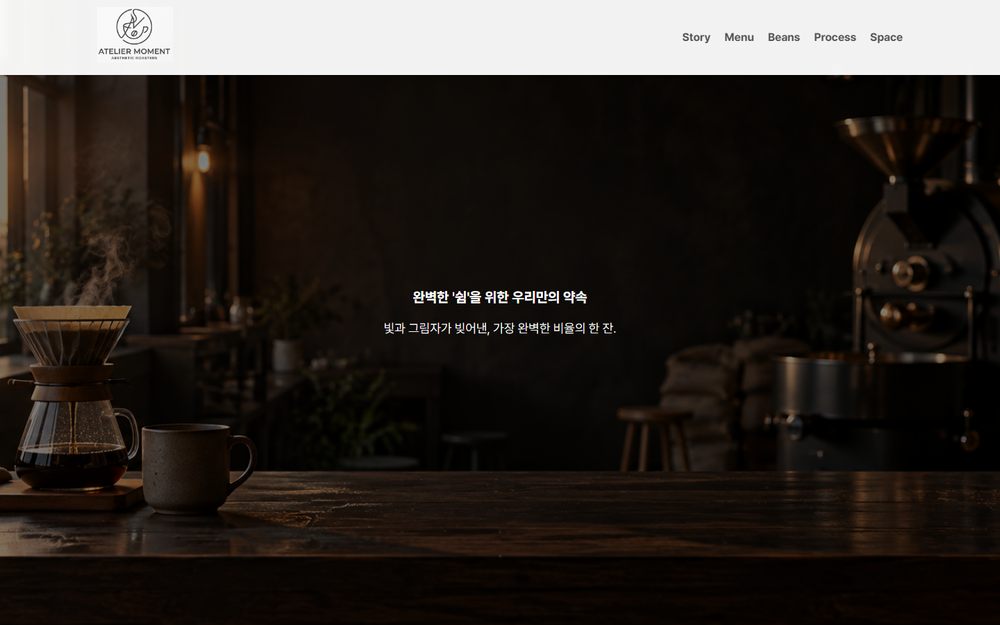
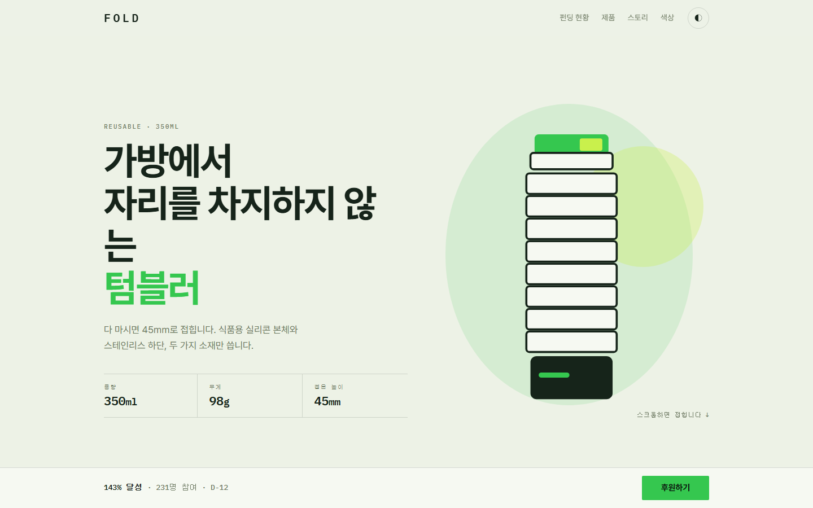
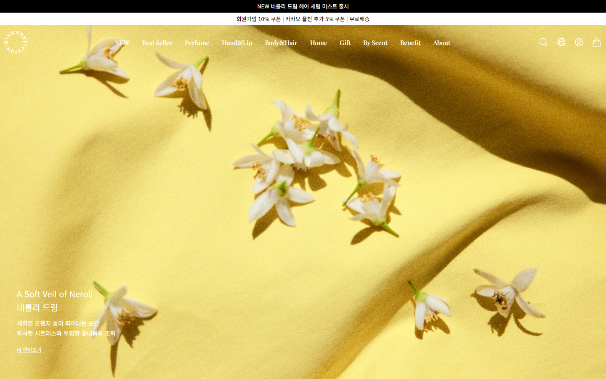

01BRAND WEBSITE · RESPONSIVE
ATELIER
MOMENT
로스터리 카페의 정체성을 살린 반응형 원페이지 사이트입니다. 기기별 최적화된 모바일 메뉴와 동적 필터를 안정적으로 구현했습니다.
프로젝트 보기01 / ABOUT
화면의 화려함보다 문서의 단단한 뼈대를 먼저 고민합니다.
웹 표준에 맞는 명확한 마크업 위에서 작업을 시작해야 유지보수하기
좋은 코드가 나온다고 믿습니다.
PC와 모바일을 아우르며 깨짐 없이 구동되는 안정적인 인터페이스를
구축합니다.
HTML로 문서 구조를 만들고 CSS로 화면을 꾸밉니다. JavaScript는 메뉴, 탭, 슬라이드처럼 화면에 필요한 동작을 구현할 때 사용합니다. PC와 모바일에서 모두 편하게 볼 수 있도록 확인하며 작업했습니다.
02 / SELECTED WORK
카페, 펀딩 페이지, 쇼핑몰 UI를 주제로 제작했습니다.

01BRAND WEBSITE · RESPONSIVE
로스터리 카페의 정체성을 살린 반응형 원페이지 사이트입니다. 기기별 최적화된 모바일 메뉴와 동적 필터를 안정적으로 구현했습니다.
프로젝트 보기
02PRODUCT LANDING · INTERACTION
펀딩 달성을 위한 제품 소개 랜딩 페이지입니다. 다크모드/라이트모드 테마 전환과 클릭 인터랙션으로 정보 전달력을 높였습니다.
프로젝트 보기
03CLONE CODING · RESPONSIVE
기존 이커머스 사이트의 구조와 주요 기능을 분석해 구현한 반응형 클론 프로젝트입니다. 사용자가 상품을 탐색하는 데 필요한 주요 UI를 충실히 구현했습니다.
프로젝트 보기03 / SKILLS
콘텐츠를 가장 잘 설명할 수 있는 의미 있는 태그를 고민합니다.
기기의 경계를 넘어 일관된 퀄리티를 보여주는 스타일을 작성합니다.
정적인 화면에 생명력을 불어넣는 필수 동작들을 구현합니다.